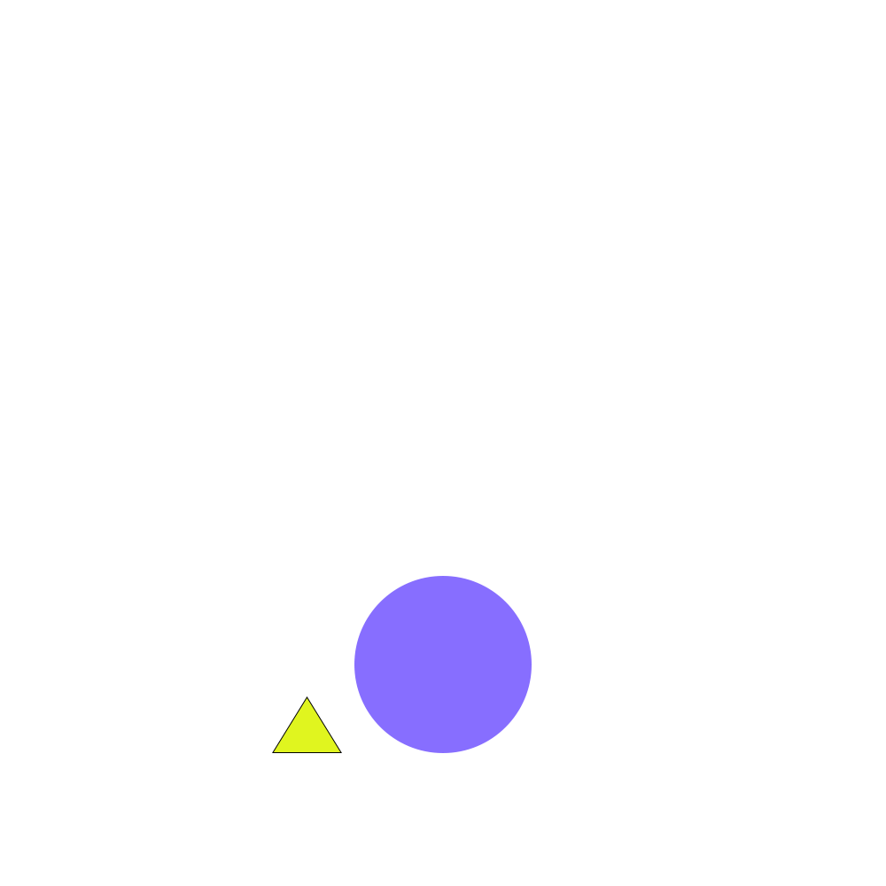

Lab 4 - Pseudocoding and Problem Solving
Challenge
Create psuedocode in javascript in a manner viable for guiding future coding projects.
Problems
Mostly just figuring out how to word instructions so as not to make them too convoluted, while also splitting the tasks up appropriately.
Reflection
This assignment was quite interesting, and I am curious to see what we will do next with pseudocoding as a guiding list. Though this lab was relatively simple, it did instill a bit of worry in me, particularly in considering the future of figuring out how to actually code the instructions made for such a seemingly simple game. However, such a prospect is nonetheless exciting.
Results
//Create board (15 x 15)
//Create player character (1 tile in size)
//Set player in center of board
//Create consumable item on random board tile
//When consumable item is touched it disappears
//Add one tile of length to player one opposite end of where they were facing
//Allow player to move one tile at a time
//Generate new consumable item
//If player hits wall or self they lose